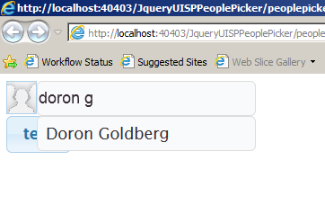
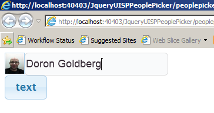

Project Description
This JQuery bundle can allow you to add an autocomplete people picker control to JQUery based pages on your SharePoint server and on remote applications as well. (which requires specilal attention for enabaling cross domain calls)
Searching:

After selection:

The control brings the user full name, image, title and login name.
(Title apears as tooltip and login name as val() for the control)